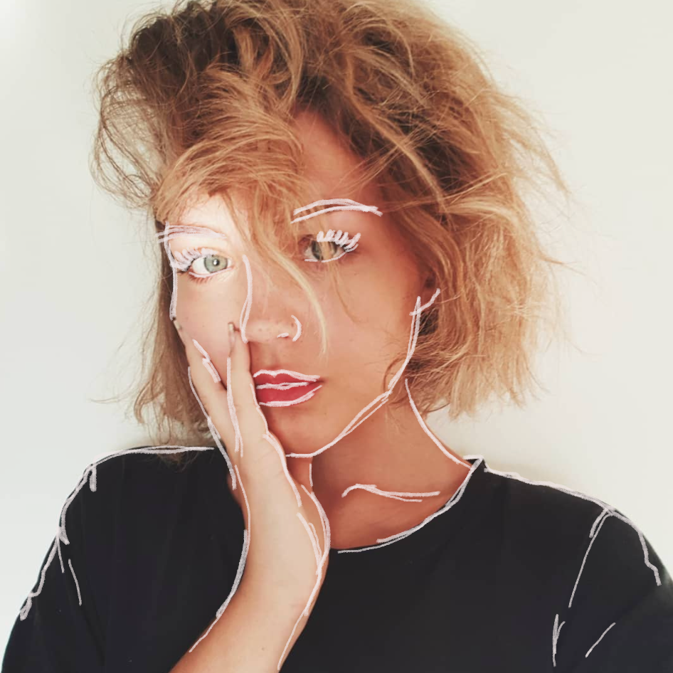

Über mich
Make Up unterstützt mein Outfit mit einem Farbakzent, da ich meistens eher dunkel gekleidet bin. Es ist für mich auch eine Art sich Zeit für sich zu nehmen um sich auf sich selbst zu konzentrieren. Ich bin nicht eine, welche ganz viel Make Up trägt aber so ein bisschen Farbe finde ich immer gut. Auch ich gefalle mir mit und ohne Make Up.
Steckbrief
Alter:
17
Stil:
Dunkel mit Farbelementen / Grunge / Bequem
Lieblingsprodukt:
Labellos, Concealer und Blush